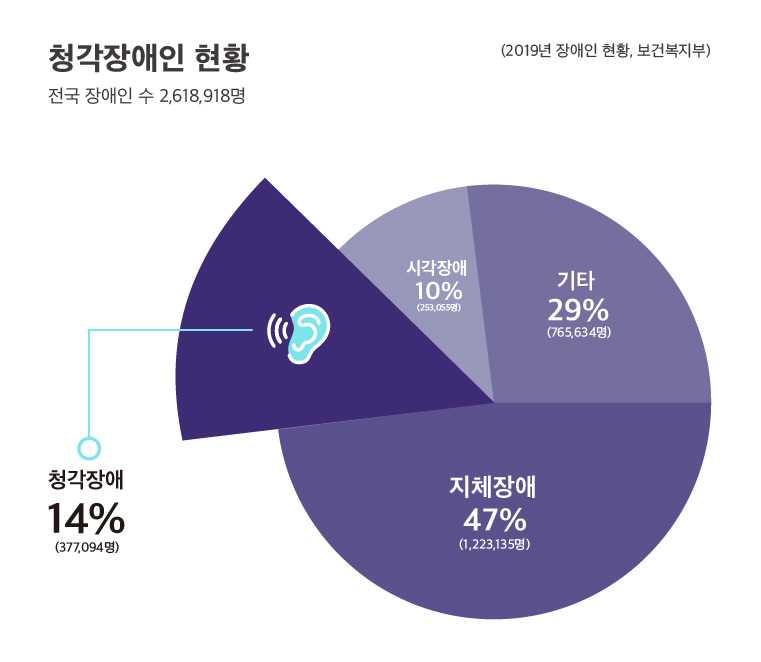
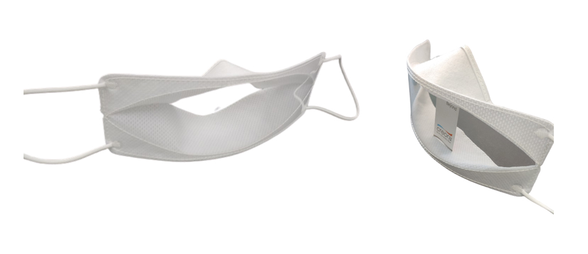
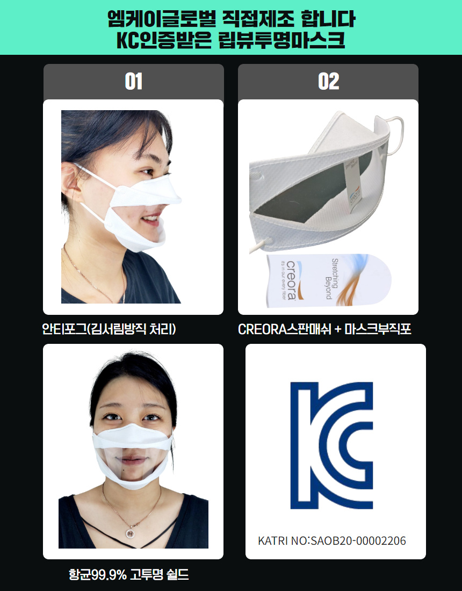
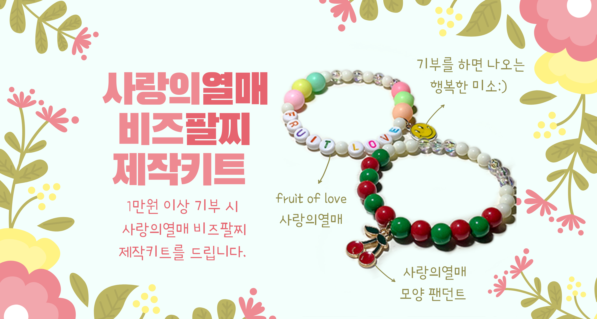

진행중인 펀딩 당신이 함께하는 응원! 크라우드 펀딩입니다.

-
코로나를 예방하기 위해 필수적으로 착용하는 마스크. 하지만 이 마스크 때문에 청각장애를 가진 이웃들은 새로운 불편함에 직면하게 되었습니다.
전국 장애인 중 청각언어장애를 가진 이웃은 약 15%로 결코 적지 않은 비중입니다. 이들은 대화하는 동안 상대방의 입 모양, 표정 등 비언어적인 표현을 통해 대화 내용을 파악합니다.
- 
-
이중 다원이와 같은 청각장애 학생 수는 약 6,200명(보건복지부, 2018). 특히나 지속적인 언어재활치료를 통해 일상생활이 가능할 정도의 소통을 하는 상당수는 비장애학생들과 함께 일반 학교에서 생활을 하고 있습니다.
언제나 들을 수 있었던 선생님의 수업이, 친구와의 대화가, 마스크로 인해 이제는 들리지 않는 소리가 되었습니다.
그로 인해 청각장애를 가진 아이들은 기본권 중의 하나인 학습권을 보장받지 못해 수업에서 소외당하고 있습니다. -
“영수증 드릴까요?”
“교통카드 한 번 더 찍어주세요” -
입모양이 보이는 투명 마스크 착용의 필요성은 교실에서뿐만 아니라 마트에서, 버스에서 오가는 대화 속에서도 나타납니다.
-

(투명마스크 이미지_예시)
-
많은 곳에서 투명마스크를 지원하고 있지만 여전히 그 수요를 충족시키지는 못하고 있는 상황. 주변에서 구매처를 찾기가 쉽지 않고, 찾을 수 있다고 해도 부담스러운 가격 때문입니다.
그래서 사랑의열매와 사랑의달팽이가 여러분들의 마음을 모아 청각장애 학생들에게 투명마스크를 전달하고자 합니다.
- 
-
그들이 투명마스크를 통해 이전처럼 세상과 원활히 소통할 수 있도록 여러분의 목소리를 보여주세요.
- 